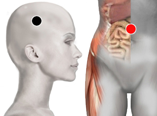

Entamoeba Histolytica
parietal - colon transverso
estómago - vejiga
hígado - riñón
píloro - riñón

Generalidades:
Crisis de ausencia y tumores en el encéfalo, Previene la formación de tumores.
Protozoo muy agresivo. Los síntomas más comunes son disentería, diarrea, colitis, nausea, vómito, malestar general. En niños puede producir convulsiones, se debe cuidar la hidratación del paciente.